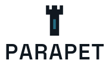

The calm protective edge between raw telemetry and operational action.
Brand Book · v1.5 · the reliability layer for Phoenix
Essence
A protective edge, not a fortress
Parapet is an open-source reliability layer for Phoenix: it turns telemetry into user-journey SLOs, burn-rate alerts, deploy correlation, incident evidence, and runbooks. The name is a parapet — a low protective wall at an edge that gives operators sightlines and prevents silent harm. The brand should feel calm, precise, protective, evidence-first, and Phoenix-native — never militaristic, neon, or like a generic observability vendor.
Protect users, not graphs. The first question is always: are users being hurt?
Evidence before explanation. Separate facts, hypotheses, and actions — never blur them.
Calm by default. Fewer, better signals. No theatrics, no war room.
Logo
The parapet tower
A corbelled parapet tower — its projecting crenellated top is a literal parapet — stacked above the wordmark. The mark stands alone as the avatar/favicon; the same mark caps the full lockup. The single Watch Blue loophole is the only accent. The wordmark is Space Grotesk, shipped as outlined paths (font-independent). No background cage; no subtitle on the primary.

parapet-logo.svg · primary
parapet-inverse.svg · dark
on warm neutral
parapet-horizontal.svg
parapet-mono.svg · single ink
parapet-mark.svg + favicon @24/16
Clear space & minimum size
Keep clear space ≥ the tower's width on all sides. Minimum: mark 16px (favicon), full lockup 120px wide. Below that, use the mark alone.
✓ Do
Use the mark alone for avatars, favicons, and tight square spaces.
Keep the tower and wordmark on their shared vertical axis.
Place on Limestone, white, Stone, or Deep Slate (use the inverse on dark).
✗ Don't
Box the mark in a rectangle or add a drop shadow.
Recolor the loophole or use off-palette colors.
Add a tagline to the primary lockup, stretch, or rotate it.
Color
Warm stone, deep slate, measured signal
Warm neutrals for surfaces, deep slate for authority, blue for calm insight, amber for warning, red for active burn, moss for healthy budget, violet only for the AI/assistive layer. All text pairings meet WCAG AA (see accessibility.md).
Neutrals
Signals
Status — always pair color with a word + icon
Typography
IBM Plex — a field manual with taste
IBM Plex Sans for UI and docs, IBM Plex Mono for code, metrics, SHAs, and IDs, IBM Plex Serif for restrained editorial accents. All open-source. (The logo's Space Grotesk is not a UI typeface.)
deploy_sha: 8f31c2a route: GET /checkout/:id
slo: checkout_completion burn_rate_5m: 14.2x
Tokens
Spacing, radius, elevation
An 8px spatial grid, sturdy low-radius shapes, and borders over heavy shadows. Everything here is a CSS variable in tokens/tokens.css (and tokens.json).
--shadow-popover 0 12px 32px rgba(16,24,32,.16) — popovers only
Components
UI primitives
Conventional patterns, calm density, visible focus. Shown light and dark — both driven by the same tokens.
HealthyWatchBurning
Checkout completion
14.2x5m burn
Target 99.5% · budget 41% · deploy 8f31c2a, 6 min before burn
light
Login success SLO fast-burn: users may be unable to sign in.
dark — admin shell
Voice
Calm, specific, evidence-backed
Write like a careful SRE helping a tired Phoenix developer. Operational messages follow: symptom → measured evidence → likely correlation → safe next action → where to inspect.
✓ Sounds like Parapet
Checkout completion is below target. The 5-minute burn rate is 14.2x. The first correlated change is deploy 8f31c2a. Suggested next step: open the rollback runbook.
✗ Not Parapet
🔥 Checkout is totally broken!! Massive anomaly detected across multiple dimensions. The system has entered a critical failure state.
✓ Empty state
No journeys protected yet. Define one user journey to create its SLO, dashboard panel, and runbook.
✗ Avoid
Nothing to show. · Unlock next-gen observability. · Single pane of glass. · AI-powered autopilot.
Words
Prefer: evidence · journey · guardrail · budget · burn rate · sightline · signal · correlate · mitigate · runbook · doctor check.
Avoid as flavor: war room · battle-tested · mission control · magic · autopilot · military-grade · single pane of glass.
Accessibility
Accessible by default
Never color alone. Status = color + word + icon (Healthy / Watch / Burning / Exhausted / Unknown).
AA contrast. Every text-on-surface token pairing meets WCAG AA — verified in notes/accessibility.md (reproduce with notes/contrast.py).
Focus is visible.--focus-ring (Watch Blue) on light; --focus-ring-on-dark (Limestone) on dark — Watch Blue is only 2.7:1 on Deep Slate, so dark surfaces need the light ring.
Reduced motion respected. Motion orients and confirms; it never dramatizes. prefers-reduced-motion zeroes durations.
Implementation
Using the tokens
Link tokens/tokens.css and reference the variables; or consume tokens/tokens.json from tooling. Dark surfaces opt in with data-theme="dark".